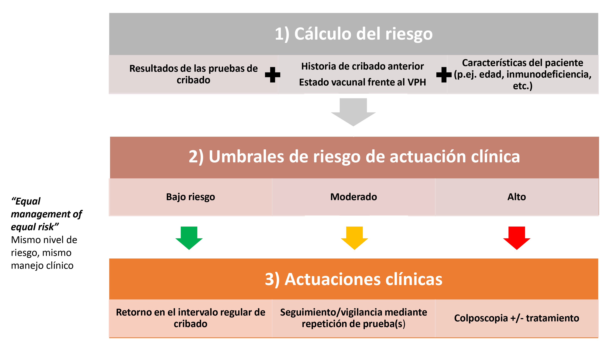

Estrategias de manejo basadas en riesgo
Como hemos visto en las secciones anteriores, el triaje se utiliza para aumentar la especificidad global y el valor predictivo positivo del cribado. Normalmente para la prueba de cribado primaria se utiliza una prueba de alta sensibilidad, con alto valor predictivo negativo, para minimizar el número de falsos negativos, aunque sea a costa de un mayor número de falsos positivos. El uso de una segunda prueba (triaje), o combinación de pruebas permitirá en un segundo paso discriminar mejor cuales de los inicialmente positivos podrían tener finalmente una lesión que requiera tratamiento. Si somos capaces de clasificar mejor las mujeres, podremos disminuir el número de derivaciones innecesarias a colposcopia y el sobretratamiento en mujeres de bajo riesgo, y en cambio identificar a las mujeres de mayor riesgo para ofrecerles rápidamente un tratamiento clínico adecuado.
El creciente número de pruebas disponibles (citología, ADN del VPH, genotipado del VPH, tinción dual, ARN del VPH, etc.), aunque mejoran la práctica del cribado, también están provocando un aumento exponencial de la complejidad y del número potencial de combinaciones. A largo plazo, mantener la proliferación de algoritmos clínicos que cubran todas las combinaciones posibles será inmanejable y clínicamente impracticable. El cribado basado en riesgos proporciona el marco necesario para garantizar que las guías de cribado sean coherentes y estén basadas en la evidencia. No sólo beneficia a la mujer individualmente, sino que también pretende una mejor asignación de recursos, aumentando tanto el rendimiento como la eficiencia del programa de cribado.
En el cribado basado en riesgos se usan niveles de riesgo de precáncer (CIN3+) para determinar el manejo clínico apropiado, bajo un mismo principio rector: "Equal Management of Equal Risk" o lo que sería “Mismo nivel de riesgo, mismo manejo clínico ” [29].
El cribado basado en el riesgo ofrece un enfoque adaptado al riesgo individual de precáncer de cada mujer. Ya no se decide el manejo clínico únicamente en función de los resultados de las pruebas (por ejemplo, "derivación colposcópica en caso de citología ASC-US y prueba de VPH positiva"), sino que son los niveles de riesgo los que determinarán el manejo (por ejemplo, "derivación colposcópica cuando el riesgo inmediato de tener CIN3+ es del 10% o superior"). Esto permite optimizar el equilibrio entre los beneficios y los daños del cribado ajustando los diferentes componentes de una estrategia de cribado a los diferentes niveles de riesgo.
Ejemplo
No todas las mujeres ASC-US y VPH positivas tienen el mismo riesgo de desarrollar CIN3+; una mujer con citología ASC-US y VPH 16/18 positiva tendrá un riesgo de CIN3+ del 18% mientras que en una mujer con citología ASC-US y pero positiva para otros tipos de VPH su riesgo de CIN3+ es de 4.5%.
NOTA:
El manejo basado en riesgos se contrapone al manejo basado únicamente en resultados, que suelen conllevar a soluciones de talla única (Manejar todos los ASC-US igual, independientemente de los factores modificadores del riesgo).
El cribado basado en riesgo se compone de tres elementos principales:
El establecimiento de umbrales o niveles de riesgo
FIGURA 7 Elementos del cribado basado en riesgos

Cada nivel de riesgo tendrá asociado una actuación clínica concreta (seguimiento al año, derivación a colposcopia, etc.). Estos niveles se determinarán según el riesgo (probabilidad) de desarrollar una lesión precancerosa o cáncer en función de la información disponible. Para un mismo nivel de riesgo, mismo manejo clínico, "Equal Management of Equal Risk".
El riesgo de CIN3+ no depende sólo del resultado de las pruebas, sino que depende de:
- La historia de cribado (ausencia de cribados previos, resultados de pruebas anteriores, etc.).
- El estado vacunal frente al VPH.
- Otros factores de riesgo del paciente (edad, tabaquismo, etc.).
Siguiendo el ejemplo anterior, ante el mismo resultado de "citología ASC-US y VPH positiva", una mujer para la que esta visita sea su primer cribado, tiene más del doble de riesgo de tener un CIN3+ subyacente que una mujer que ha dado negativo al VPH en una ronda de cribado previa.
Es importante entender que la estratificación personalizada del riesgo sólo sirve a su propósito cuando se traduce en diferentes actuaciones clínicas. Las tres actuaciones clínicas principales son:
Retorno en el intervalo regular de cribado.
Seguimiento/vigilancia mediante repetición de prueba(s).
Derivación para colposcopia y tratamiento.
Estas actuaciones clínicas se pueden ajustar a diferentes ventanas temporales e intensidades (seguimientos a 1, 3 o más años).
Cada país debe llegar a un consenso, según su propia epidemiología, recursos y aceptación del riesgo por parte de la sociedad, sobre los niveles de riesgo y sus actuaciones clínicas asociadas.
Como explica Katki ,[30] "no existían estimaciones de riesgo cuando se crearon las primeras guías de cribado y manejo clínico basadas en la citología, pero se sabía qué resultados del cribado conllevaban el mayor riesgo de resultados clínicamente importantes, como CIN3 y cáncer. En consecuencia, diferentes resultados anormales de citología o biopsia se manejaban con intervenciones de mayor o menor agresividad en función del riesgo implícito que conllevaban (por ejemplo, colposcopia inmediata, repetición de la citología al año o retorno al cribado rutinario cada 3 años). Cuando el riesgo superaba un nivel determinado, implícitamente, las guías establecían la opción de manejo que correspondiera". Estos riesgos implícitos, y ya aceptados para el cribado citológico, son los que pueden utilizarse para determinar cómo incorporar una nueva estrategia de cribado. Los riesgos pueden calcularse para las nuevas combinaciones de pruebas y compararse con el riesgo más similar.
La siguiente tabla muestra los principales niveles de riesgo de referencia que suelen definirse para el manejo clínico. Varias estrategias de triaje distintas pueden determinar un mismo nivel de riesgo, y por lo tanto requerir un manejo clínico equivalente.
|
| Categorización de
riesgo CIN3+ |
Niveles de riesgo de referencia |
Actuación clínica recomendada |
| Muy alto |
HSIL + VPH-16pos (*64%) |
Realización de colposcopia (+/- tratamiento) con distintas ventanas temporales |
| Alto |
HSIL + VPHpos (*49%) |
| HSIL+ VPHneg (*25%) |
| Moderado-alto |
ASC-US VPHpos
(*4.5%-10%) |
| Moderado-bajo |
Benchmark: Riesgos menores de ASC-US VPH-positivo pero mayores que VPHneg
(*0.25-4.5%) |
Seguimiento con pruebas de cribado sin colposcopia a distintos intervalos temporales |
| Bajo |
VPHneg
(0.15% a los 5 años*) |
Retorno al cribado rutinario con distintos intervalos temporales |
| Cito-neg
(0.25% a los 5 años*) |
|